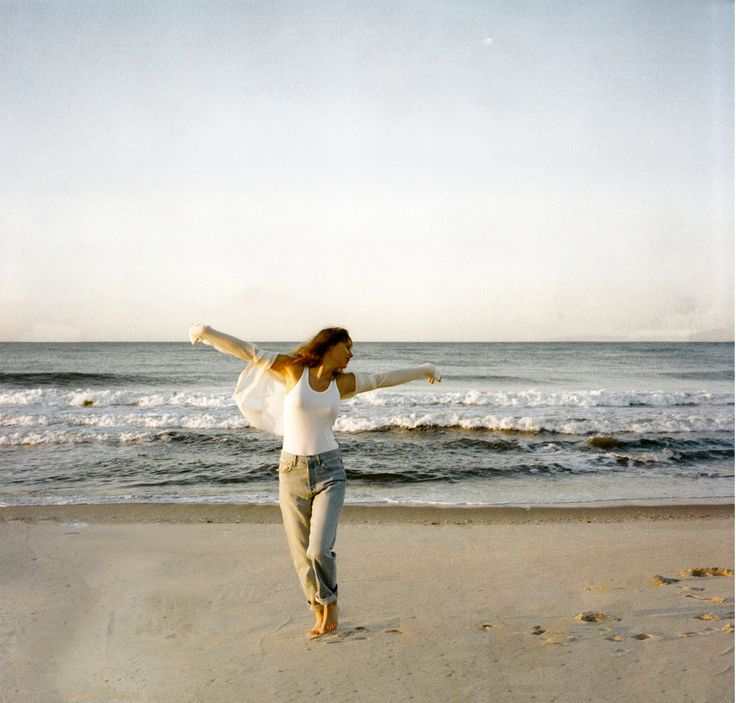

Taylor Swift es una cantante, compositora y una de las artistas más influyentes del pop actual,
conocida por convertir su vida personal en historias que millones de personas sienten como propias.
Empezó muy joven en el country, escribiendo sobre amores adolescentes y desilusiones
(como en Love Story o You Belong With Me).
Con el tiempo, fue reinventándose: pasó al pop
masivo con discos como 1989, exploró sonidos más oscuros en Reputation, y durante la pandemia
sorprendió con un estilo más íntimo y narrativo en Folklore y Evermore.
Una de las cosas más importantes de su historia es su pelea por el control de su música:
cuando perdió los derechos de sus primeros discos, decidió regrabarlos como
“Taylor’s Version”,
transformando un conflicto de la industria en una movida artística y de poder.
Así, su gira The Eras Tour se convirtió en un fenómeno cultural global, repasando todas sus “eras” (etapas musicales),
casi como si cada álbum fuera un capítulo distinto de su vida.
Gracias a los ingresos que obtuvo en el tour fue capaz de volver a comprar los derechos de su música, por lo que
volvió a ser dueña de los "diarios" de su vida; sus canciones.

Biografía de Taylor Información de shows Discografía de Taylor